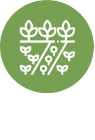
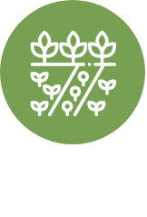

MERCADO DE LAS COSAS VERDES
Nuestro objetivo es ofrecer alimentos sanos y de la más alta calidad sin que sea un privilegio de solo un sector que puede pagarlo en mercados orgánicos gourmet, la buena alimentación es un derecho de todos. Este punto es el último momento en donde la cadena de producción y circulación se cierra con los mismos chinamperos. OFRECEMOS productos chinamperos y de la zona de montaña libres de agroquímicos y de la más alta calidad UNIMOS a consumidores y productores de forma directa al no haber intermediarios IMPULSAMOS la incorporación de nuevos productores chinamperos y productos de la zona de montaña para hacer crecer a nuestra comunidad


 
